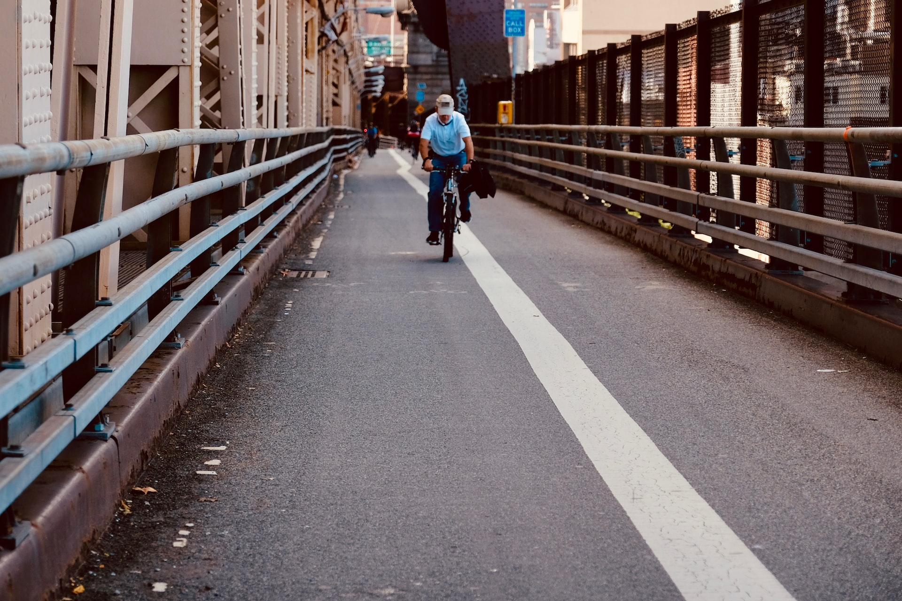

Introduction
New York is a city of great opportunities for one on a bike. Cycling is a great way to learn about new neighborhoods, get exercise, and is often the fastest way to get around! However, there are dangers and important things to know when it comes to biking in the city. I hope to provide a helpfully guide in peoples bike riding journeys!
Personally, I love going over the bridges as the sun is setting. There is something unique about watching the river to your left that is quite enchanting. Further, it allows us to get to know both how our city was built and how it operates. As such, I am excited to share my knowledge with y'all.
I intend to lay this website out in four sections:
| Page | Description |
|---|---|
| Home | Where you are right now, the introduction. |
| Routes | A collection of good routes around the city. |
| Safety | Being safe and not letting your bike get stolen. |
| Biking to School | What it says on the tin. |
Hope You Enjoy!!